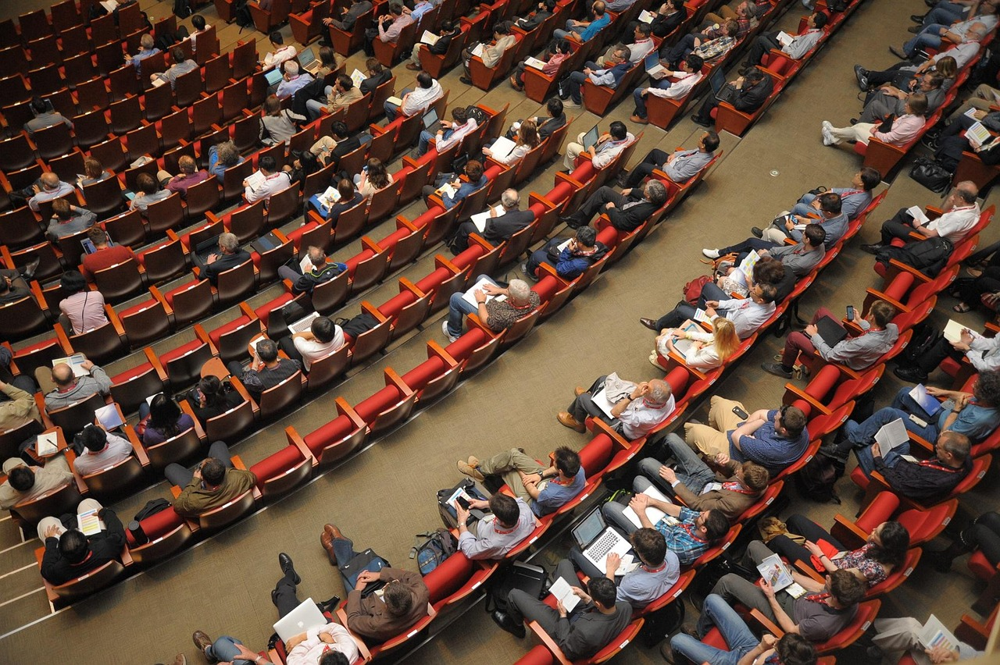

History
TechCon started in 2010 as a small gathering of tech enthusiasts and has grown into one of the largest technology conferences in the world. Each year, we bring together industry leaders, innovators, and passionate individuals to share knowledge and explore the latest trends in technology.

Mission
Our mission is to foster innovation and collaboration in the tech community. We aim to provide a platform for learning, networking, and sharing ideas that will drive the future of technology.
Past Speakers
Dr. Adaeze Okocha
CTO, QuantumLeap Tech
An expert in AI ethics and machine learning, Dr. Okocha delivered a powerful keynote in 2022 on responsible AI development. She’s a vocal advocate for inclusive tech and has advised multiple African governments on digital transformation.
Felix Nwosu
Founder, CodeBridge Africa
In 2020, Felix shared his journey of building developer ecosystems in underserved communities. His work in open-source education has impacted thousands of young coders across West Africa.
Clara Singh
Product Director, GenAI Labs
Clara presented in 2023 on generative AI’s role in reshaping digital content creation. Her session included a live demo that went viral for its creativity and technical depth.